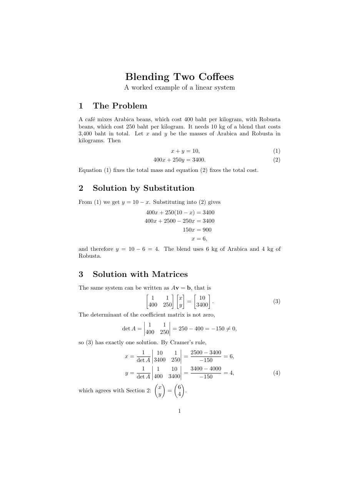
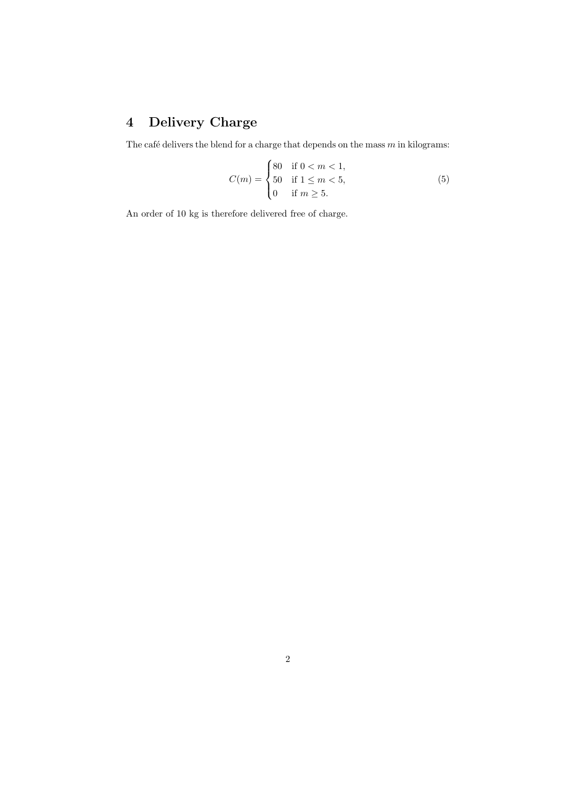

วัตถุประสงค์
เมื่อจบ Workshop นี้ นักศึกษาจะสามารถ
- เขียนสมการที่มีหมายเลขด้วย
equationและอ้างถึงด้วย\labelกับ\eqrefได้ - เขียนสมการหลายบรรทัดที่จัดตรงกันด้วย
alignและalign*และเลือกเอาหมายเลขออกบางบรรทัดด้วย\nonumberได้ - เขียนเมทริกซ์และดีเทอร์มิแนนต์ด้วย
pmatrix,bmatrixและvmatrixได้ - เขียนฟังก์ชันแบ่งกรณีด้วย
casesได้ - อ่านข้อความผิดพลาดที่เกิดจากสมการหลายบรรทัดได้
ไฟล์ที่ได้รับ
ดาวน์โหลด math_equations.zip แล้วแตกไฟล์ไว้ในที่ที่หาง่าย จะได้โฟลเดอร์ math_equations ดังนี้
math_equations/
├── doc.pdf ชิ้นงานต้นแบบ (2 หน้า)
├── warmup.tex ไฟล์สั้น ๆ สำหรับ Part A
├── main.tex ไฟล์เริ่มต้นสำหรับ Part B
└── content.txt เนื้อหาของ Part B (สูตรเขียนแบบข้อความธรรมดา)ดูไฟล์แยกทีละไฟล์ได้ที่
warmup.tex,
main.tex,
content.txt
เตรียมเครื่อง
ประมาณ 5 นาทีใช้เครื่องมือชุดเดียวกับ Workshop ก่อนหน้า เปิดโฟลเดอร์ math_equations ใน Sublime Text และเปิดเทอร์มินัลในโฟลเดอร์เดียวกัน
ใช้แพ็กเกจ mathtools และ amssymb เหมือน Workshop คณิตศาสตร์ 1 · นิพจน์ และคอมไพล์ 2 ครั้งทุกครั้งที่เพิ่มหรือย้ายสมการที่มีหมายเลข
\eqref{...} (สไลด์ Referring to Equations ในบทเรียน Mathematics) ทำงานเหมือน \ref ที่เรียนใน Workshop รูปภาพและสี แต่ใส่วงเล็บรอบหมายเลขสมการให้เอง เช่น (2)
อุ่นเครื่อง
ประมาณ 35 นาทีใช้ไฟล์ warmup.tex ทำทีละข้อ บันทึก คอมไพล์ 2 ครั้ง และสังเกตผล
- A0 สมการมีหมายเลข เปลี่ยน
\[ A = \pi r^2 . \]เป็น
แล้วเพิ่มประโยค\begin{equation} A = \pi r^2 . \label{eq:area} \end{equation}Equation~\ref{eq:area} gives the area.จากนั้นเปลี่ยน\refเป็น\eqrefหมายเลขสมการอยู่ตำแหน่งใด
\refกับ\eqrefแสดงผลต่างกันอย่างไร - A1 เปลี่ยน
equationเป็นequation*ผลต่างจาก
\[...\]หรือไม่ และ\eqrefที่อ้างถึงสมการนี้แสดงอะไร - A2 หลายบรรทัด แทน
\[...\]3 ชุดของการแก้สมการ2x + 3 = 11ด้วย
แล้วลองย้าย\begin{align} 2x + 3 &= 11 \\ 2x &= 8 \\ x &= 4 \end{align}&ไปไว้หลัง=และเปลี่ยนเป็นalign*&กำหนดอะไร ทุกบรรทัดได้หมายเลขหรือไม่ และalign*ต่างอย่างไร - A3 ใช้
align(ไม่มีดอกจัน) แล้วใส่\nonumberท้ายสองบรรทัดแรก ก่อน\\เมื่อใดควรมีหมายเลขเฉพาะบางบรรทัด
- A4 เมทริกซ์ แทนบรรทัด
% A3: write the matrix hereด้วย
แล้วลองเปลี่ยน\[ M = \begin{pmatrix} a & b \\ c & d \end{pmatrix}, \qquad \det M = \begin{vmatrix} a & b \\ c & d \end{vmatrix} = ad - bc . \]pmatrixเป็นbmatrixและเขียนเมทริกซ์n \times nทั่วไปด้วย\cdots,\vdotsและ\ddotsภายในเมทริกซ์
&และ\\ทำหน้าที่เหมือนในตารางของ Workshop ตาราง อย่างไร - A5 ฟังก์ชันแบ่งกรณี เขียนค่าสัมบูรณ์ในหัวข้อสุดท้ายเป็นสมการแยกบรรทัด
\[ |x| = \begin{cases} x & \text{if } x \geq 0, \\ -x & \text{if } x < 0. \end{cases} \]ถ้าลืมเว้นวรรคใน
\text{if }จะเกิดอะไรขึ้น - A6 ทำให้ผิดโดยตั้งใจ ใส่
&ในสมการequationของข้อ A0 เช่นA &= \pi r^2 .! Misplaced alignment tab character &. l.14 A & = \pi r^2 . ?ทำไม
&ใช้ได้ในalignแต่ใช้ไม่ได้ในequation - A7 เว้นบรรทัดว่างหนึ่งบรรทัดระหว่างบรรทัดใน
alignแล้วคอมไพล์! Paragraph ended before \align was complete. <to be read again> \par l.20 ?บรรทัดว่างมีความหมายอะไรใน LaTeX (ย้อนไปดู Workshop การจัดรูปแบบข้อความ) และทำไมจึงห้ามมีในสมการ
- A8 ใส่
\\ท้ายบรรทัดสุดท้ายของalign(หลังx &= 4) แล้วคอมไพล์ 2 ครั้งไม่มีข้อผิดพลาด แต่ผลลัพธ์ผิดปกติอย่างไร (สังเกตหมายเลขสมการและช่องว่างใต้สมการ)
แก้ไฟล์กลับให้ถูกต้อง (หมายเลขบรรทัดของแต่ละคนอาจไม่ตรงกับตัวอย่าง)
equation, align และแบบมีดอกจันต่างกันอย่างไร (2) \label ในสมการวางไว้ตรงไหน
(3) เมทริกซ์วงเล็บโค้ง เหลี่ยม และเส้นตรงใช้สภาพแวดล้อมใด และ (4) ทำไมห้ามมีบรรทัดว่างในสมการ
งานหลัก
ประมาณ 55 นาทีเปิด main.tex และคัดลอกเนื้อหาจาก content.txt มาวาง เพื่อสร้างตัวอย่างการแก้ระบบสมการ 2 หน้าให้เหมือน doc.pdf มากที่สุด คอมไพล์ 2 ครั้งด้วย
$ pdflatex main.tex
$ pdflatex main.tex

คำแนะนำ
ใน content.txt เมทริกซ์เขียนแบบ [1 1; 400 250] กล่าวคือ เว้นวรรคคั่นช่อง และ ; คั่นแถว ตารางนี้บอกเฉพาะสิ่งที่ต้องใช้
| ส่วนของชิ้นงาน | สิ่งที่ต้องใช้ |
|---|---|
| สมการ (1) และ (2) | align จัดตรงที่ = และ \label ทั้งสองบรรทัด |
| การแทนค่าหัวข้อ 2 | align* |
| สมการ (3) | equation และ bmatrix 3 ตัว เวกเตอร์ \mathbf{v} และ \mathbf{b} |
| ดีเทอร์มิแนนต์ | \[...\], vmatrix, \det, \neq |
| สมการ (4) | align สองบรรทัด บรรทัดแรกใช้ \nonumber |
| ท้ายหัวข้อ 3 | \ref ไปยังหัวข้อ 2 และ pmatrix ในบรรทัด |
| สมการ (5) | equation กับ cases และ \text{if } |
| (1), (2), (3) ในเนื้อความ | \eqref (ห้ามพิมพ์ตัวเลขเอง) |
คำใบ้เพิ่มเติม (เปิดดูเมื่อติด)
- ตัวเลข 3,400 ในเนื้อความเขียนเป็น
3{,}400ในโหมดคณิตศาสตร์หรือพิมพ์3,400เป็นข้อความธรรมดาก็ได้ - ใน
alignให้ใส่\labelก่อน\\ของบรรทัดนั้น - ถ้าหมายเลขสมการข้ามไปหนึ่งเลข ตรวจว่ามี
\\เกินท้ายบรรทัดสุดท้ายหรือไม่ - เส้นของดีเทอร์มิแนนต์ต้องใช้
vmatrixไม่ใช่|พิมพ์เอง เพราะ|ไม่ปรับความสูงตามเมทริกซ์
ส่งงาน
เปลี่ยนชื่อไฟล์เป็น math_equations_<รหัสนักศึกษา>.tex แล้วคอมไพล์ใหม่ 2 ครั้งด้วยชื่อนั้น ส่งทั้งไฟล์ .tex และ .pdf
รายการตรวจสอบก่อนส่ง
ท้าทาย
ไม่บังคับ · ประมาณ 20–30 นาทีทำเพิ่มในไฟล์ใหม่ ข้อใดก็ได้
- C1 เขียนการแทนค่าในหัวข้อ 2 ใหม่ให้ทั้งชุดมีหมายเลขเดียว โดยใช้
alignedภายในequation - C2 แก้ระบบสมการ 3 ตัวแปร
x + y + z = 6,2x - y + z = 3,x + 2y - z = 2ด้วยกฎของคราเมอร์ แสดงเมทริกซ์3 \times 3และดีเทอร์มิแนนต์ทุกตัว - C3 เขียนสมการยาวที่ต้องตัดบรรทัด เช่น การกระจาย
(a+b)^5ทุกพจน์ ด้วยalignโดยวาง&ไว้หลัง=ในบรรทัดแรก และขึ้นบรรทัดต่อด้วย&\quad + - C4 เขียนเฉลยการบ้านคณิตศาสตร์ข้อหนึ่งของตัวเอง ที่มีสมการอ้างอิงด้วย
\eqrefอย่างน้อย 3 ครั้ง
ข้อผิดพลาดที่พบบ่อย
| อาการ | สาเหตุและวิธีแก้ |
|---|---|
! Paragraph ended before \align was complete. |
มีบรรทัดว่างภายใน align หรือลืม \end{align} ลบบรรทัดว่างออก (ใช้ % ถ้าต้องการเว้นให้อ่านง่าย) |
! Misplaced alignment tab character &. |
ใช้ & ใน equation หรือ \[...\] ซึ่งไม่มีการจัดแนว |
! Extra alignment tab has been changed to \cr. |
ใน align หรือเมทริกซ์มี & มากเกินในแถวเดียว |
! Environment pmatrix undefined. |
ยังไม่ได้ \usepackage{mathtools} |
| หมายเลขสมการข้ามไป 1 เลข และมีช่องว่างเกิน | มี \\ เกินท้ายบรรทัดสุดท้ายของ align |
เห็น (??) แทนหมายเลขสมการ |
คอมไพล์อีกครั้ง หรือชื่อใน \eqref ไม่ตรงกับ \label |
หมายเลขที่ได้จาก \eqref เป็นของสมการผิดตัว |
ใน align วาง \label ไว้ในบรรทัดที่ผิด หรือบรรทัดนั้นมี \nonumber |
| คำว่า if ในฟังก์ชันแบ่งกรณีติดกับตัวแปรและเป็นตัวเอียง | ใช้ \text{if } พร้อมเว้นวรรคท้ายคำ |
แหล่งอ้างอิง
- สไลด์บทเรียน Mathematics ส่วน Equations, Numbering Equations, Referring to Equations, Align Equations, An Aligned Equation, Matrices
- สไลด์บทเรียน Figures and Tables ส่วน Labels and Cross-references (ทบทวน
\labelและ\ref) - The Not So Short Introduction to LaTeX (เปิดด้วย
texdoc lshort) หัวข้อ 3.5 Multiple Equations และ 3.6 Arrays and Matrices